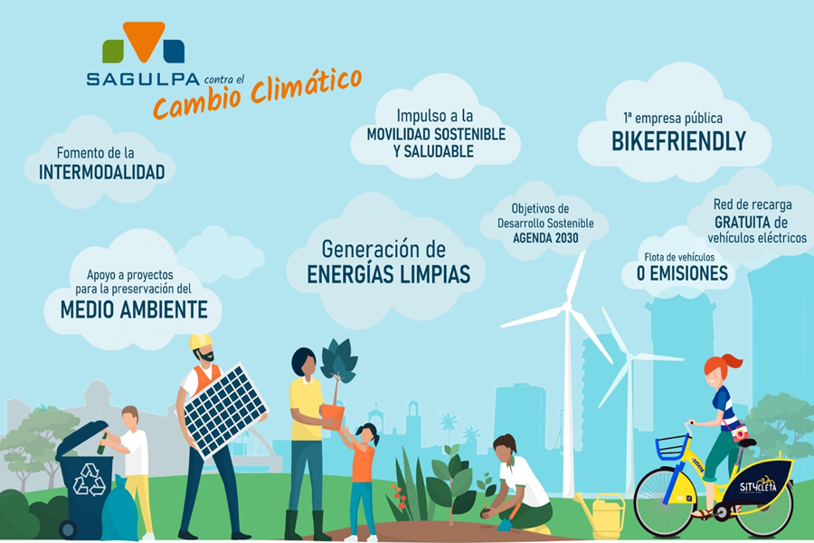

Una investigación del Panel Intergubernamental sobre el Cambio Climático (IPCC) de la ONU muestra que el planeta podría cruzar el umbral crucial de 1,5 grados Celsius -por encima de los niveles preindustriales- en solo 12 años, lo que en su criterio, conllevaría a una "catástrofe global". Condiciones climáticas anómalas como sequías extremas, incendios forestales, inundaciones o escasez de alimentos para cientos de millones de personas podrían ser solo los primeros síntomas.
